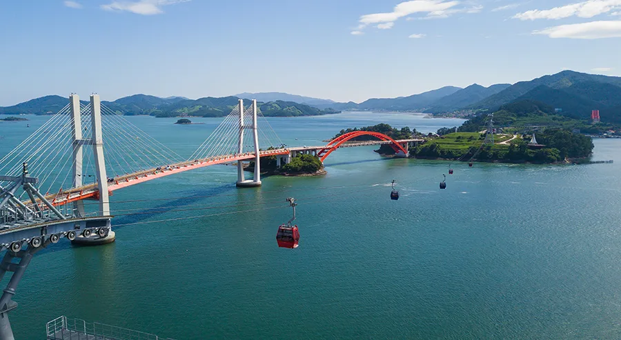
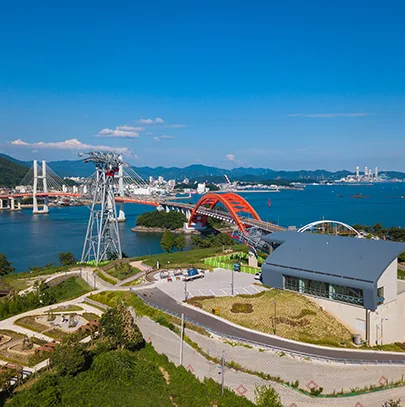
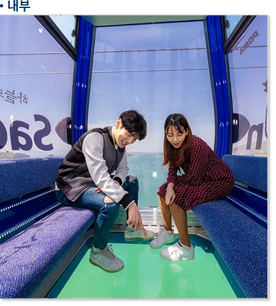
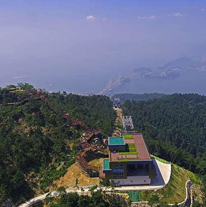
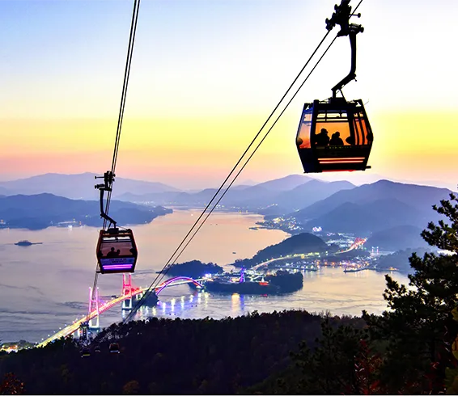
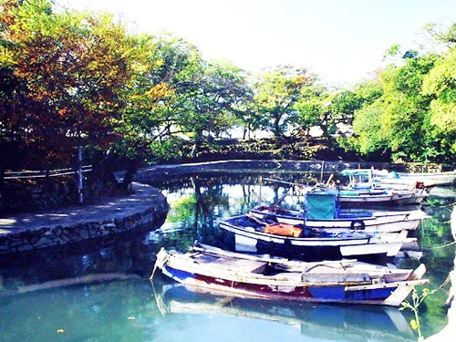
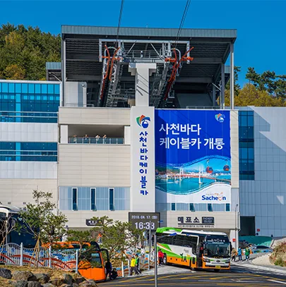

▲ 대방정류장에서 초양도를 거쳐 각산으로 이어지는 사천바다케이블카. 2.43km 구간 중 816m가 바다 위를 지난다
경남 사천시 대방동에서 출발한 곤돌라가 바다를 가로질러 섬 하나를 지나고, 산꼭대기까지 올라간다. 사천바다케이블카는 산과 바다, 섬을 한 노선으로 묶은 국내 최초 케이블카로 2018년 4월 개통했다. 대방정류장에서 초양정류장을 거쳐 각산정류장까지 이어지는 총 2.43km 구간 중 816m가 바다 위를 지나는데, 이 구간에서 바닥이 투명한 크리스탈 캐빈을 타면 발아래로 한려수도 바다가 그대로 비친다. 종점인 각산정류장에 내려 전망대까지 오르면 창선·삼천포대교와 남해 섬들이 파노라마로 펼쳐진다. 요금·운영시간부터 대방진굴항 연계 코스까지, 방문 전 확인해 두면 좋은 정보를 정리했다.
1. 사천바다케이블카 개요 — 산·바다·섬을 잇는 국내 최초 노선

▲ 초양정류장 인근 상공에서 본 모습. 케이블카 타워 뒤로 창선·삼천포대교가 이어진다 ⓒ 사천바다케이블카(사천시시설관리공단)
사천바다케이블카는 대방정류장 → 초양정류장 → 각산정류장 3개 정류장을 순환하는 자동순환 2선식(Bi-Cable) 방식으로, 노선 길이 2.43km를 약 20~25분에 오간다. 해수면 위 최고 높이는 74m로 아파트 약 30층 높이에 해당하며, 지주(철탑)는 5개소에 설치돼 있다. 캐빈은 총 45대(일반 30대·크리스탈 15대)가 운행되고, 캐빈 1대당 최대 10명이 탑승할 수 있어 시간당 최대 1,300명을 실어 나른다. '산과 바다, 섬을 동시에 잇는 국내 최초 케이블카'라는 수식어가 붙은 이유다.
2. 일반 캐빈 vs 크리스탈 캐빈 — 발밑까지 뚫린 유리 바닥

▲ 크리스탈 캐빈 내부. 바닥 전체가 강화유리로 돼 있어 816m 바다 구간에서 발아래 바다가 그대로 비친다 ⓒ 사천바다케이블카(사천시시설관리공단)
캐빈은 파란색 크리스탈 캐빈과 빨간색 일반 캐빈 두 종류로 나뉜다. 크리스탈 캐빈은 바닥 전체가 27.5mm 강화유리로 돼 있어, 최고 74m 높이에서 발밑으로 펼쳐지는 바다를 그대로 내려다볼 수 있다. 스릴을 즐기고 싶다면 크리스탈 캐빈을, 부담 없이 풍경만 즐기고 싶다면 일반 캐빈을 고르면 된다. 두 캐빈 모두 사방이 통유리로 돼 있어 어느 쪽을 타도 삼천포대교와 남해 섬 풍경을 놓치지 않는다. 탑승은 대방정류장에서는 매표 시 부여된 탑승번호 순서로, 각산정류장에서는 도착 순서대로 이뤄진다.
3. 각산전망대 — 해발 약 398m에서 보는 삼천포대교

▲ 각산정류장 방향에서 내려다본 케이블카 라인. 산 정상 전망대까지 데크 산책로가 이어진다 ⓒ 사천바다케이블카(사천시시설관리공단)
각산정류장에 내리면 정상 전망대까지 나무 계단과 데크로 이어진 산책로가 시작된다. 여름철에는 안개처럼 물을 뿌리는 쿨링 포그가 설치돼 있어 더위를 식히며 오를 수 있다. 해발 약 398m 각산 정상부의 전망대에 서면 동쪽으로 창선·삼천포대교, 남쪽으로 남해 금산과 사량도까지 한려해상국립공원의 섬들이 층층이 펼쳐진다. 5개 다리가 물길과 어우러진 창선·삼천포대교 풍경은 사천 8경 중에서도 으뜸으로 꼽힌다. 해 질 무렵에는 도심 불빛과 어우러진 야경이, 금·토·일요일과 공휴일 저녁에는 삼천포대교의 분수쇼가 더해져 낮과는 다른 분위기를 만든다.

▲ 해 질 녘 각산 방향에서 본 케이블카와 삼천포대교. 노을과 야경이 겹치는 시간대가 사진 명소로 꼽힌다 ⓒ 사천바다케이블카(사천시시설관리공단)
4. 초양도와 대방진굴항 — 케이블카 아래·옆으로 이어지는 코스

▲ 대방정류장 인근 대방진굴항. 수령 200년 넘은 팽나무·소나무 숲 속 인공 항구다 ⓒ 경상남도 가볼만한 곳
케이블카가 바다 구간에서 지나는 섬이 초양도다. 초양정류장에 내려 잠시 바닷바람을 쐬고 다음 편으로 각산까지 이어 타는 방문객이 많다. 대방정류장 인근에는 대방진굴항이 있다. 조선 순조 때(1820년경) 진주목 관하 73개 면에서 수천 명이 동원돼 만든 인공 항구로, 바깥에서 항구가 보이지 않도록 둑을 쌓고 팽나무·소나무를 심어 숨긴 것이 특징이다. 임진왜란 당시 이순신 장군이 거북선을 숨긴 정박지라는 이야기가 전해지지만 역사적으로 검증된 사실은 아니며, 마을에서는 이를 기려 굴항 안에 이순신 장군 동상을 세워 두었다. 케이블카 탑승 전후로 도보로 들러보기 좋은 거리에 있다.
국가유산포털에서 대방진굴항 상세 정보 확인 가능5. 요금·운영시간·주차

▲ 출발점인 대방정류장. 매표소와 무인발권기에서 표를 구매할 수 있다 ⓒ 사천바다케이블카(사천시시설관리공단)
탑승권은 일반 캐빈과 크리스탈 캐빈 모두 왕복·편도로 나눠 판매하며, 크리스탈 캐빈이 일반 캐빈보다 5,000원 비싸다. 대인은 만 13세 이상, 소인은 만 3세(36개월)부터 만 12세까지 기준이다. 운영시간은 요일별로 달라 월~목요일은 09:30~18:00(매표마감 17:00), 금요일은 09:30~20:00(매표마감 19:00), 토요일은 09:00~20:00(매표마감 19:00), 일요일은 09:00~18:00(매표마감 17:00)이다. 시설 점검을 위한 비정기 휴장일이 월 1~2회 지정되는 경우가 있으니, 방문 전 공식 홈페이지 공지사항에서 휴장 여부를 확인하는 편이 안전하다.
| 구분 | 왕복 | 편도 |
|---|---|---|
| 일반캐빈 대인 | 18,000원 | 12,000원 |
| 일반캐빈 소인 | 15,000원 | 9,000원 |
| 크리스탈캐빈 대인 | 23,000원 | 15,000원 |
| 크리스탈캐빈 소인 | 20,000원 | 12,000원 |
| 항목 | 내용 |
|---|---|
| 월~목요일 | 09:30~18:00(매표마감 17:00) |
| 금요일 | 09:30~20:00(매표마감 19:00) |
| 토요일 | 09:00~20:00(매표마감 19:00) |
| 일요일 | 09:00~18:00(매표마감 17:00) |
| 휴장일 | 시설 점검에 따른 비정기 휴장 있음(홈페이지 공지사항 확인) |
| 주소 | 경남 사천시 사천대로 18(대방동) |
| 문의 | 055-831-7300 |
주차장은 대방정류장 옆에 마련돼 있으며, 성수기 주말에는 만차가 잦은 편이라 오전 일찍 방문하거나 대중교통을 이용하는 것도 방법이다. 최신 요금·주차 안내는 공식 홈페이지에서 확인할 수 있다.
사천바다케이블카 공식 홈페이지에서 최신 요금 확인 가능6. 추천 코스 — 사천읍성·항공우주박물관과 묶어 하루 코스로
대한민국 구석구석(한국관광공사)이 소개하는 당일 코스는 사천읍성 → 사천바다케이블카 → 대방진굴항 순이다. 1박 2일로 여유 있게 돌아본다면 첫날은 사천읍성 → 사천항공우주박물관 → 사천바다케이블카, 둘째 날은 대방진굴항 → 비토섬 → 선진리성·조명군총으로 이어가는 코스를 추천한다. 케이블카 탑승 자체는 왕복 20~25분이면 충분하지만, 각산전망대 산책로와 초양정류장 정차, 대방진굴항 산책까지 더하면 반나절 일정으로 잡는 편이 여유롭다.
✅ 사천바다케이블카, 가기 전 체크리스트
· 대방정류장~초양정류장~각산정류장, 총 2.43km(바다 구간 816m), 최고 높이 74m
· 캐빈 45대 중 크리스탈 캐빈 15대, 바닥 27.5mm 강화유리로 발아래 바다가 비침
· 일반캐빈 왕복 대인 18,000원·소인 15,000원, 크리스탈캐빈 왕복 대인 23,000원·소인 20,000원
· 운영시간은 요일별로 다름(월~목 09:30~18:00, 금 09:30~20:00, 토 09:00~20:00, 일 09:00~18:00)
· 시설 점검에 따른 비정기 휴장일 있음, 방문 전 홈페이지 공지사항 확인 필수
· 각산정류장 하차 후 270m 안팎 데크 산책로로 전망대까지 이동, 여름철 쿨링 포그 운영
· 각산전망대에서 창선·삼천포대교·한려해상국립공원 조망, 주말·공휴일 저녁 분수쇼
· 대방정류장 인근 대방진굴항(이순신 거북선 은신 전설)까지 도보 연계 가능